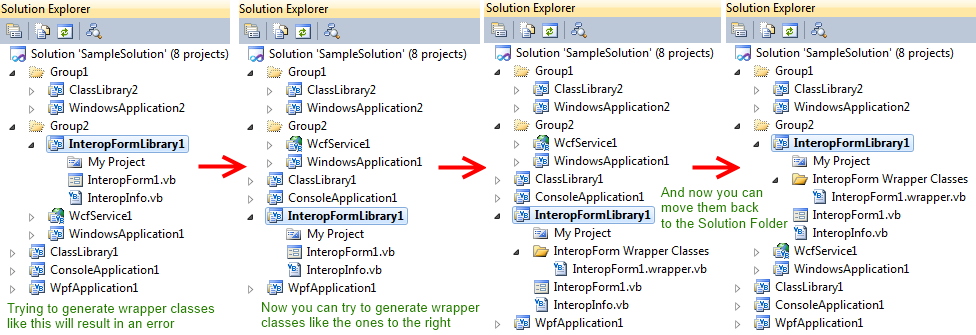

"Unable to generate wrapper classes since no InteropForms were found."
Many months after creating a VB6 InteropForm Library project, I decided it was time to make a few changes to the project. In case you are unfamiliar with InteropForms, they allow you to run .Net bases code from a VB6 application. My company needs them because we still are not ready to let go of our VB6 codebase. You can find the Interop Forms toolkit here: http://msdn.microsoft.com/en-us/vbasic/bb419144. It modifies the Visual Studio IDE to give you access to tools and project templates. It also includes sample projects.
When I had completed my changes to the interop form, I tried to update the wrapper class that makes it possible to expose the .Net form's functionality to VB6. I clicked Tools->Generate InteropForm Wrapper Classes just as the documentation tell you to. Instead of a warm, fuzzy feeling, I got this error message:
Unable to generate wrapper classes since no InteropForms were found.Now it had been probably a year since I last modified a .Net InteropForm project, but I know I had been successful at generating the wrapper classes in the past. In that time, many new projects were added to the solution, and the projects had been arranged into logical Solution Folders. If you've never seen a Solution Folder, right click the Solution in the Solution Explorer and click Add->New Solution Folder.
So after many fruitless hours looking across the web for the cause of my problem, I decided to start from scratch and see why I might have been successful in the past. After making a fresh InteropForm project in its own solution (no Solution Folders or anything else), I tried to generate the InteropForm wrapper classes, and I succeeded! So clearly the Interop Forms toolkit wasn't as broken as I feared.
Some testing later, I was able to conclude that the problem was a bug in the Interop Forms toolkit where it could not generate wrapper classes for projects that were in Solution Folders.
Solution: Move any projects you have in Solution Folders to the root level. Run the Generate InteropForm Wrapper Classes tool. Then move the projects back to the Solution Folder you moved it from.
While my research indicates that this may not be the only reason for that error message, I hope my solution may be helpful to someone else.
